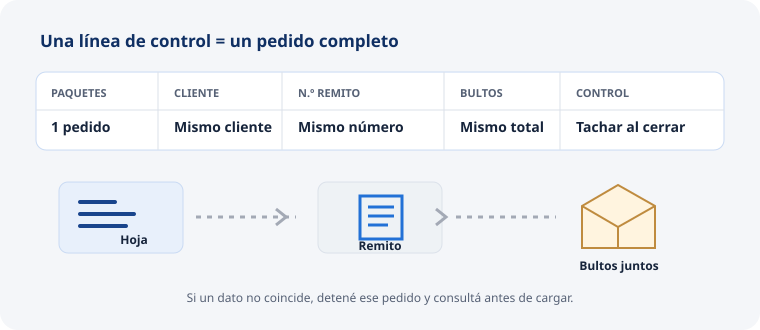

PUESTO DE CONTROL DEL PEDIDO Y LA CARGA
Controlador de depósito
Verificás cada pedido contra su hoja, empacás y etiquetás lo que quedó controlado, y cotejás la documentación y los bultos durante la carga. También podés ir a Bascerano a buscar los artículos de la lista, después de recibir por correo la autorización gestionada por la Encargada. Ver el proceso de retiro en Bascerano.
ANTES DE EMPACAR
Controlar el pedido preparado
Proceso normal y simple
Recibí el pedido y su hoja juntos. Compará cada artículo y su cantidad; marcá cada línea al comprobarla. Si todo coincide, liberalo para empaque.
Detalle a fondo · Conteo línea por línea
Qué necesitás
Mercadería reunida para un pedido, su hoja de picking y un área donde mantener separado ese pedido.
Paso a paso
- Verificá que la hoja esté con el pedido físico y que ambos identifiquen al mismo cliente y pedido.
- Tomá la primera línea y compará el código del artículo con la hoja; no uses solo la semejanza de descripción o envase.
- Contá unidad por unidad hasta completar la cantidad física indicada.
- Marcá la línea como controlada solo después de comparar código y cantidad.
- Repetí lo mismo para todos los renglones, incluidos los artículos en bolsas o cajas.
- Si la mercadería coincide en todas las líneas, liberá el pedido para comenzar el empaque.
Comprobación
Todas las líneas tienen marca de control y las cantidades físicas coinciden con la hoja del pedido.
Si algo difiere
Si sobra algo, pedí que vuelva a su ubicación. Si falta algo, devolvé la hoja a la persona de picking para completar el picking o confirmar el faltante. No liberes para empaque mientras haya diferencias.
↑ Volver al resumenAL ENCONTRAR UNA DIFERENCIA
Devolver el pedido para corregirlo
Proceso normal y simple
Señalá el renglón que no coincide y qué viste físicamente. Mantené juntas hoja y mercadería, pedí a la persona de picking que vuelva a revisar y controlá otra vez la línea corregida.
Detalle a fondo · Diferencia de código o cantidad
Qué anotar o comunicar
Número del pedido, código de la línea, cantidad indicada y cantidad contada. Informá si es faltante, sobrante o artículo diferente.
Paso a paso
- Detené el control de ese pedido y conserva la hoja junto a su mercadería.
- Indicá a la persona de picking la línea específica que debe revisar.
- Si hay un sobrante, la persona de picking lo devuelve a su posición.
- Si falta producto, la persona de picking vuelve a la ubicación para completar o confirmar que no está.
- Al volver la línea, repetí el conteo físico y marcala como controlada solo si coincide.
- Continuá con el resto de la hoja y liberá el pedido para el empaque cuando cierre todo.
Si sigue sin aparecer
Consultá a la Encargada. La persona de picking comprueba primero posiciones cercanas y los recursos de ubicación; el cero se confirma después de esa búsqueda.
↑ Volver al resumenPEDIDO CONTROLADO
Empacar en bolsa o en caja
Proceso normal y simple
Empacá únicamente después de cerrar el control. Volvé a contar cada línea mientras la colocás en bolsa o caja. Cerrá el bulto para que su contenido no pueda salir durante el traslado.
Detalle a fondo · Armado físico del pedido
Para una bolsa
- Compará el producto con la hoja al colocarlo en la bolsa.
- Tachá la línea de empaque después de contarla.
- Cuando se requiera identificar individualmente un producto, pegá su etiqueta.
- Cerrá la bolsa con la máquina de hilos.
Para una caja
- Encintá la base de la caja.
- Cargá los productos contando contra la hoja y tachando línea por línea.
- Si sobra espacio, ajustá el tamaño de la caja de forma que el pedido quede contenido.
- Cerrá la caja con cinta.
Productos con etiqueta equivalente
En las correas que se identifican por código genérico o medida, pegá en cada correa la etiqueta equivalente al código pedido. En los electroembragues, comprobá en la hoja el código pedido y el marcado antes de aplicar la etiqueta que indique la Encargada.
Comprobación
El paquete contiene solamente los artículos del pedido y las líneas de la hoja coinciden con lo empacado.
Si aparece una diferencia
Separá el artículo y avisá. No cambies un código o etiqueta para que coincida por apariencia.
↑ Volver al resumenIDENTIFICACIÓN DEL BULTO
Etiquetar cada bulto y anotar el total
Proceso normal y simple
Aplicá a cada bulto la etiqueta de transporte. Contá cuántos bultos tiene el pedido y anotá ese total en la hoja para que coincida con el remito.
Detalle a fondo · Etiqueta visible y recuento
Paso a paso
- Identificá el pedido y la forma de envío que figuran en la hoja.
- Imprimí y colocá una etiqueta de la etiquetadora en cada bulto del pedido.
- Revisá que el cliente y transporte correspondan a ese pedido.
- Contá las bolsas y cajas que forman el envío.
- Anotá en la hoja de pedido la cantidad total de bultos.
- Dejá los bultos juntos en la zona indicada y conserva la hoja con ellos.
Comprobación
Todos los bultos están identificados con el cliente y transporte correctos y la hoja contiene el total que debe aparecer en el remito.
Si la etiqueta no coincide
No entregues ese bulto para carga. Pedí la etiqueta correcta a la Encargada y volvé a comprobar antes de moverlo.
↑ Volver al resumenANTES Y DURANTE LA SALIDA
Controlar remitos y carga de la camioneta
Proceso normal y simple
Recibí de la Encargada los remitos y la hoja de control. Verificá cliente y cantidad de bultos por pedido y tachá cada línea al cargarla. Si algo difiere, detené ese pedido y avisá.
Detalle a fondo · Lista, comprobante y bultos
Qué necesitás
Remitos de pedidos autorizados para salir, hoja de control de remitos de Logbelts y bultos identificados.
Paso a paso
- Recibí de la Encargada la hoja de control y los remitos del lote.
- En la hoja, localizá por pedido la cantidad de paquetes, código y nombre del cliente, número de remito y bultos totales.
- Comprobá que la línea corresponda a un pedido autorizado para salir.
- Mientras la persona de picking acerca cada pedido y el Transportista lo carga, compará el cliente y el número de bultos con la línea del control.
- Tachá una línea solamente cuando el pedido y sus bultos estén cargados.
- Si la carga tiene más de un lote, usá el registro correspondiente y comenzá el control de nuevo para ese lote.
Comprobación
Las líneas de los pedidos cargados están tachadas; cliente, remito y total de bultos coinciden entre la hoja y lo físico.
Si algo difiere
Detené la carga de ese pedido. Avisá a la Encargada, mantenelo separado y resolvé la diferencia de autorización, remito o bultos antes de cargarlo.

OTRAS TAREAS DEL PUESTO
Apoyos y tareas de operación
Se realizan cuando corresponde y no forman parte de la secuencia habitual de control, empaque, etiquetado y salida.
ARTÍCULOS EN ALTURA
Apoyar la reposición desde reserva
Proceso normal y simple
Si el producto está en una posición de reserva, coordiná con la persona de picking y usá el equipo asignado para bajar el pallet. Sacá la caja necesaria, llevála al área de picking y volvé a ubicar el pallet.
Detalle a fondo · Pallet de reserva a picking
Qué necesitás
Ubicación o identificación del pallet, artículo y caja que necesita el pedido, zona despejada y equipo de movimiento asignado.
Paso a paso
- Confirmá con la persona de picking el código y la caja requeridos antes de mover el pallet.
- Identificá el pallet de reserva que corresponde.
- Operá el autoelevador como Controlador capacitado y posicionalo para retirar el pallet.
- Bajá el pallet, localizá la caja indicada y pasala al sector de picking.
- Volvé a subir el pallet a su posición de reserva.
- Pedí a la persona de picking que compruebe el código y la cantidad retirados contra la hoja.
Comprobación
La caja correcta quedó en picking y el pallet restante quedó almacenado en la ubicación de reserva.
Si no podés confirmar la ubicación o el equipo
No muevas el pallet; consultá a la Encargada y reorganizá el pedido con ella.
↑ Volver al resumenMOVIMIENTO EN DEPÓSITO
Usar y dejar los equipos del puesto
Proceso normal y simple
Operá la zorra eléctrica y el autoelevador cuando la tarea te corresponde y tenés la capacitación aplicable. Al terminar, estacioná los equipos en el espacio asignado y dejá pasillos despejados.
Detalle a fondo · Preparación, movimiento y cierre
Antes de mover carga
- Confirmá qué pallet, bulto o carga necesita moverse y su destino.
- Verificá que la ruta esté despejada y que no haya pedidos en el trayecto.
- Si el trabajo es retirar un producto de nivel de reserva, coordiná con la persona de picking la caja y el código requeridos.
- Mové la carga a la zona indicada sin separar etiquetas ni documentos asociados.
Al cerrar el trabajo
- Devolvé cada equipo al lugar demarcado.
- Dejá los pasillos y zonas de zorra/autoelevador despejados.
- Informá al Encargado cualquier condición que impida el uso normal del equipo.
El autoelevador lo opera el Controlador. El Picker solo puede operarlo en presencia del Controlador y con capacitación aplicable; la presencia por sí sola no reemplaza la capacitación.
↑ Volver al resumenRESPALDO AL PUESTO
Cubrir la emisión de remitos
Proceso normal y simple
La Encargada lleva la emisión habitual. El Controlador puede cubrir esa emisión como respaldo cuando corresponde y cuenta con el acceso habilitado.
Detalle a fondo · Emisión de respaldo
Qué necesitás
Pedido controlado, preparación cargada, datos de cliente y transporte, cantidad de bultos y usuario con permiso de emisión para la cuenta indicada.
Paso a paso
- Confirmá que la Encargada delegó la emisión de este pedido.
- Verificá que el pedido y la preparación correspondan al mismo cliente.
- Usá el usuario habilitado para la cuenta que corresponde; cuenta 1 es la referencia salvo indicación de Gerencia.
- Revisá cliente, códigos, cantidades, valor declarado indicado, transporte, domicilio y bultos.
- Emití una sola vez y localizá el comprobante resultante.
- Si el sistema da una respuesta dudosa, buscá el comprobante antes de volver a emitir.
No hagas ajustes de stock como parte de esta cobertura. Una diferencia exige conteo físico y autorización previa de Gerencia.
↑ Volver al resumenFIN DE LA JORNADA
Ordenar el área de control y circulación
Proceso normal y simple
Dejá despejados pasillos y zona de equipos. Estacioná la zorra y el autoelevador en su lugar, revisá el área de recepción y comunicá cualquier pendiente.
Rutina de 15 minutos del equipo
Además del recorrido de tu puesto, el equipo completa al final del turno la planilla de control diario: son 13 puntos de orden, limpieza y registro con firma del responsable del turno. Ver los 13 puntos.
Detalle a fondo · Recorrido de cierre
- Recorré los pasillos y las zonas por donde circulan zorras y autoelevador; retirá las cajas, pallets y residuos.
- Estacioná los equipos en el espacio demarcado.
- Revisá su estado y avisá si algo requiere atención.
- Verificá que recepción no tenga mercadería suelta.
- Comprobá que etiquetas y carteles de rack se puedan leer; informá el daño o faltante.
- Entregá a la Encargada los pedidos o movimientos que quedan por continuar.
Rutina de 15 minutos del equipo
Además del recorrido de tu puesto, el equipo completa al final del turno la planilla de control diario: son 13 puntos de orden, limpieza y registro con firma del responsable del turno. Ver los 13 puntos.
↑ Volver al resumen